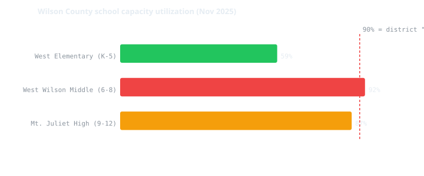
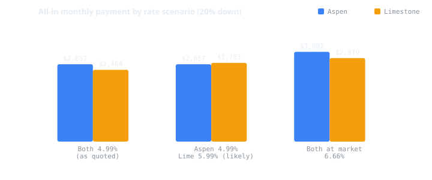
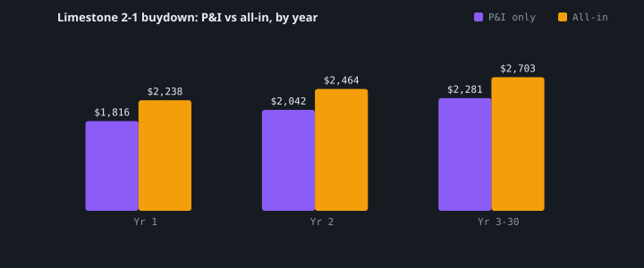
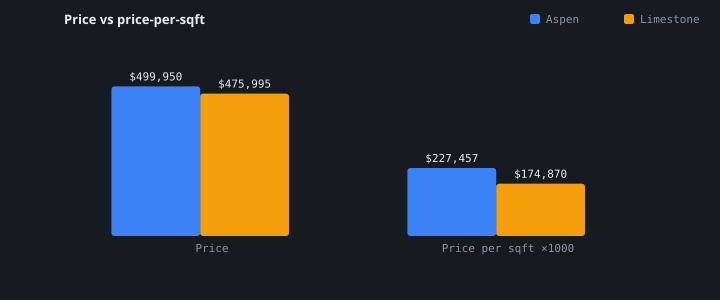
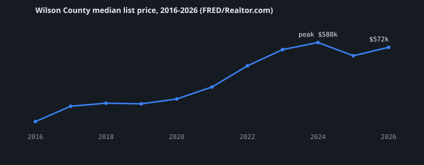

README.md on GitHub for rendered Mermaid diagrams._Generated 2026-08-31. Research by four parallel agents (listings/comps, schools, rezoning, market/hazard). Every figure is sourced; confidence is labelled. See data.json for machine-readable output and SOURCES.md for the full source list._
Schools are not a differentiator. They are literally the same three schools. That was your primary decision criterion, and it is settled by the school district's own address-level lookup. The decision reduces to money, land-use risk, and commute.
The one thing that decides this purchase is a document you don't have yet: a Loan Estimate from each builder's lender. Your quoted 4.99% is a builder incentive, not a market rate (market is 6.66%), and Ashton Woods publishes a 2-1 buydown whose year-2 step is exactly 4.99% — meaning Limestone Way's real long-run rate is likely 5.99%. That single fact flips the answer.
| 324 Aspen Aly | 256 Limestone Way | |
|---|---|---|
| City | Mount Juliet 37122 (not Lebanon) | Lebanon 37087 |
| Price | $499,950 (not $470,000) | $475,995 |
| Size | 2,198 sqft, 4bd/3ba | 2,722 sqft, 5bd/3ba |
| $/sqft | $227.46 | $174.87 |
| HOA | $145/mo | $50/mo |
| Schools | West Elem → West Wilson Middle → Mt. Juliet High | identical |
| Land-use risk | MEDIUM | HIGH |
| Commute to Nashville | 19 mi | 31 mi |
| Appliances | fridge + washer/dryer + blinds included | none |
| Likely 30-yr rate | 4.99% (unconfirmed) | 5.99% (2-1 buydown) |
These corrections change the math, so they come first.
| What you said | What the evidence shows | Confidence |
|---|---|---|
| Both in Lebanon 37087 | 324 Aspen Aly is in Mount Juliet 37122 (Benders Cove, Meritage Homes). Different city, different municipal tax rate, different commute. | High |
| Aspen Aly = $470,000 | $499,950 on Meritage's own page (Redfin cached $523,450, so it appears price-reduced). $470k is below Meritage's published Premier Series floor of $473,990. | Medium-High |
| Aspen Aly ≈ 2,150 sqft | 2,198 sqft ("Palmetto" plan) | High |
| Limestone price unknown | $475,995 builder / $469,995 MLS, 2,722 sqft ("Bartlett" plan), Ashton Woods, MLS 3276727 | High |
Any monthly payment you were quoted on a $470,000 Aspen Aly is wrong by ~$30,000 of principal.
The Schools agent bypassed builder marketing (which is routinely stale) and queried Wilson County Schools' own address-level attendance lookup (Transfinder InfoFinder i, district client ID WCS5MDPRFWQV). Both addresses returned exactAddressMatch: true, score 100.
flowchart TD
A["324 Aspen Aly<br/>Mount Juliet 37122<br/>36.2380, -86.4920"]
B["256 Limestone Way<br/>Lebanon 37087<br/>36.2388, -86.4396"]
A --> D["WILSON COUNTY SCHOOLS K-12<br/>(NOT Lebanon Special School District)"]
B --> D
D --> E["West Elementary K-5<br/>~59% utilized"]
E --> F["West Wilson Middle 6-8<br/>~92% utilized ← pressure point"]
F --> G["Mt. Juliet High 9-12<br/>87% vs 90% trigger"]
The two homes sit ~2.9 miles apart on the same latitude. The 37087 vs 37122 split is *postal, not jurisdictional* — the district's own address record even carries Limestone Way as 37122. Both have named district bus stops (Benders Ferry Rd & Moss Creek Blvd; Limestone Way & Emerald Blvd).
Every proficiency score, growth measure, capacity ratio and rating is identical by construction, because it is the same three buildings.

| West Elementary | West Wilson Middle | Mt. Juliet High | |
|---|---|---|---|
| Utilization | ~59% | ~92% | 87% |
| Math proficient | 64% | 49% | 42% |
| Reading proficient | 60% | 49% | 57% |
| Third-party (soft) | top 10% of TN schools | 41st of 583 TN middle schools, 5-star | better than 83.3% of TN high schools |
District graduation rate 98.5%; of 23 A–F-eligible WCS schools: 8 A, 8 B, 6 C, 1 D, no F.
Two corrections logged during research: jome.com's claim that Benders Cove feeds Mt. Juliet Middle is wrong (refuted by the official lookup), and an earlier hypothesis that Limestone Way had been rezoned to LaGuardo Elementary is not supported — the authoritative lookup returns West Elementary for both.
Your instinct that rezoning is a live risk is correct. Your instinct that it distinguishes these two homes is not.
Wilson County Schools has made four board-approved boundary changes in five years — roughly annual — and every new school opening has triggered one.
timeline
title Wilson County Schools boundary changes
2020 : Green Hill HS opens - hundreds rezoned OUT of Mt. Juliet HS
2022 : Gladeville Elementary to Rutland Elementary
2023 : 107 students Rutland to Gladeville, 113 Gladeville to Southside
2025 : LaGuardo Elementary opens - West Elem and West Wilson Middle affected
2026 : Central Pike Elementary opens - Gladeville, Rutland, Southside redrawn
Why it cannot favor either home: both share the identical triad, so no boundary change at West Elementary, West Wilson Middle, or Mt. Juliet High can hit one house and spare the other. WCS moves whole subdivisions together by stated policy.
Where the pressure actually is:
Uncomfortable irony worth stating plainly: both subdivisions are still actively building out (~350 homes entitled at Benders Cove, 660 at Golden Bear Place, +92 at Silver Springs; Cades Bluff has 6 active / 7 under contract with phases still releasing). The rezoning risk you're worried about is being manufactured by the very developments you're choosing between.
Grandfathering is not policy. It's discretionary and case-by-case: terminating-grade students and siblings have typically been *offered* a choice to stay, sometimes requiring an application.
Once schools cancel out, the risk that actually separates these homes is what gets built next door.
Hwy 109 is Lebanon's de facto industrial/distribution corridor:
Commercializing toward retail and mixed-use residential, which is materially less value-suppressing than dock-door warehouse: Golden Bear Place (660 homes mixed-use), a convenience store/fuel station rezoning, Silver Springs (+92 homes), and Lebanon Rd widening from 2 to 5 lanes.
Market 30-year fixed is 6.66% (Freddie Mac PMMS, week of 2026-08-27). A 4.99% quote is ~167 bps below market and cannot be a standard rate — it is a builder buydown.
| Builder | Published incentive | What your "4.99%" probably is |
|---|---|---|
| Meritage (Aspen) | "as low as 4.99% (5.093% APR)" through Oct 31 | Possibly permanent — but Meritage's own FAQ says a buydown _"does not change the permanent note rate… it simply buys down the rate for the first couple of years."_ UNCONFIRMED. |
| Ashton Woods (Limestone) | 2-1 buydown: 3.99% yr 1 / 4.99% yr 2 / 5.99% yr 3–30 | The year-2 step. Your real long-run rate is likely 5.99%. |
Ashton Woods' *current* Cades Bluff banner is different again — "as low as 3.25% + $20k in design options" — so the 4.99% you were quoted may already be stale and beatable.

| Scenario | Aspen Aly | Limestone Way | Winner |
|---|---|---|---|
| Both 4.99% (as you were told) | $2,657 | $2,464 | Limestone by $193/mo |
| Aspen 4.99% / Limestone 5.99% — LIKELY | $2,657 | $2,703 | Aspen by $46/mo |
| Both at market 6.66% | $3,082 | $2,870 | Limestone by $213/mo |
Component detail (likely scenario): Aspen P&I $2,145 + tax $151 + ins $217 + HOA $145. Limestone P&I $2,281 + tax $156 + ins $217 + HOA $50.

| Period | P&I | All-in |
|---|---|---|
| Year 1 @ 3.99% | $1,816 | $2,238 |
| Year 2 @ 4.99% | $2,042 | $2,464 |
| Year 3–30 @ 5.99% | $2,281 | $2,703 |
+$465/mo permanent increase from year 1 to year 3. Budget from the year-3 number, not the teaser.
| Scenario | Aspen | Limestone | Δ |
|---|---|---|---|
| Both 4.99% | $1,056,464 | $982,345 | Limestone saves $74,119 |
| Aspen 4.99% / Lime 5.99% | $1,056,464 | $1,068,294 | Aspen saves $11,830 |
| Both 6.66% | $1,209,689 | $1,128,228 | Limestone saves $81,461 |

Limestone is $174.87/sqft vs Aspen $227.46/sqft. Do not read that as a clean 30% discount, and do not read it as a warning either. Two separate things are going on:
Why that matters, and it is not good news. If the market were discounting Cades Bluff for the warehouse park and the adjacent apartments, the discount would appear subdivision-wide, because every lot there shares that exposure. It does not appear. So:
> The two findings are separate, and both are true: the per-sqft value on 256 Limestone Way is genuine — it comes from plan size, not from the market warning you off. And the Hwy 109 corridor exposure appears to be unpriced — you would absorb the 546,000 sqft distribution center, the 254-unit apartment complex and the pending commercial rezonings without compensation.
Unpriced risk is precisely the kind that surfaces at resale, once the distribution center is operating and the next buyer runs the same search these agents did. Do not let the square-footage value convince you that you are being paid to take the corridor risk — you are not.
| Aspen (Mt. Juliet) | Limestone (Lebanon) | |
|---|---|---|
| County rate | $1.1657/$100 | $1.1657/$100 |
| City rate | $0.28 | $0.6855 (or $0.405 certified — unresolved) |
| Combined | $1.4457 | $1.5707 |
| Est. annual | ~$1,807 | ~$1,869 |
Mt. Juliet's city rate is ~59% lower than Lebanon's, which partially offsets Aspen's higher price. If Limestone Way turns out to be *outside* Lebanon city limits, its tax drops to ~$1,387 — a $482/yr swing that is still unresolved.
Also: Wilson County reappraised in 2026 with values up an average 66%, and is moving from a 5-year to a 3-year reappraisal cycle. For new construction, the assessor's value often lags a year — your first full-year bill can jump.
Identical floor plans in the same subdivisions:
| Property | Same-plan comp | Read |
|---|---|---|
| Limestone (Bartlett, 2,722 sqft) | 241 Limestone Way — $444,995, PENDING after a price cut 251 Limestone Way — $489,995 (cut from $535,324) 259 Limestone Way — $501,865 | Subject is $31,000 ABOVE a pending identical comp. Strong leverage. |
| Aspen (Palmetto, 2,198 sqft) | 317 Aspen Aly — $516,660 | Subject is $16,710 BELOW its twin. Already keenly priced; less room. |
This is the highest-value action in the whole analysis. Negotiate Limestone Way to the $444,995 comp and, even at 5.99%, its all-in drops to ~$2,514/mo — beating Aspen by $143/mo and saving ~$28,670 of 30-year interest. The ask is evidenced, not arbitrary: an identical plan on the same street went pending at that number.
Also unused: Cades Bluff is USDA-eligible (0% down). Useful for cash preservation, but USDA adds a 1% upfront guarantee fee + 0.35%/yr — do not treat it as free.

Underwrite a 7+ year hold. A 3–5 year exit is likely at or below purchase price after transaction costs.
flowchart TD
S["Schools identical - not a factor<br/>Rezoning risk symmetric - not a factor"] --> Q1{"Loan Estimate:<br/>is Aspen's 4.99% PERMANENT?"}
Q1 -->|"No - both reset to ~6.66%"| L1["LIMESTONE<br/>$213/mo cheaper, 524 sqft bigger"]
Q1 -->|"Yes"| Q2{"Can you negotiate Limestone<br/>toward the $444,995 comp?"}
Q2 -->|"Yes"| L2["LIMESTONE<br/>~$143/mo cheaper even at 5.99%<br/>+ 5th bedroom + $95/mo lower HOA"]
Q2 -->|"No - stuck at $475,995"| Q3{"How much do you weigh<br/>546k sqft of warehouse on Hwy 109<br/>and a shorter commute?"}
Q3 -->|"A lot"| A1["ASPEN ALY<br/>$46/mo cheaper, 11 mi closer,<br/>lower land-use risk, appliances included"]
Q3 -->|"Not much"| L3["LIMESTONE<br/>+524 sqft and a 5th bedroom<br/>for ~$46/mo more"]
If forced to pick today with the rate question unresolved: 256 Limestone Way, contingent on negotiating toward $445–455k. You get 524 more sqft, a 5th bedroom, and $95/mo less HOA for roughly the same money, and you hold documented leverage that Aspen Aly does not offer. What you take on is the Hwy 109 corridor — and note carefully that the market has not discounted Cades Bluff for it, so you are absorbing that exposure uncompensated. It is a real cost that shows up when you sell, not a rounding error.
Choose 324 Aspen Aly if its 4.99% is confirmed permanent *and* Limestone won't move off $475,995 — then it is genuinely $46/mo cheaper with a shorter commute, lower land-use risk, and ~$2,000–3,500 of appliances included.
Four agents researched in parallel with a citation-or-UNVERIFIED rule. Peer review caught real errors: the Mount Juliet geography error was found independently by two agents; the school-assignment question was escalated to the district's own API after builder pages were shown to be stale; and two agents retracted their own conclusions mid-flight — one withdrew an "elementary favors Limestone" claim after being shown it rested on a pre-rezoning number, and flagged that the $/sqft headline overstates the gap. Where sources conflicted (Lebanon's city tax rate, the two prices for each home), both figures are reported rather than one being silently chosen.
Largest remaining unknowns: rate permanence, Limestone's city-limits status, the transactable price on both homes, and parcel-level flood/geotech confirmation.